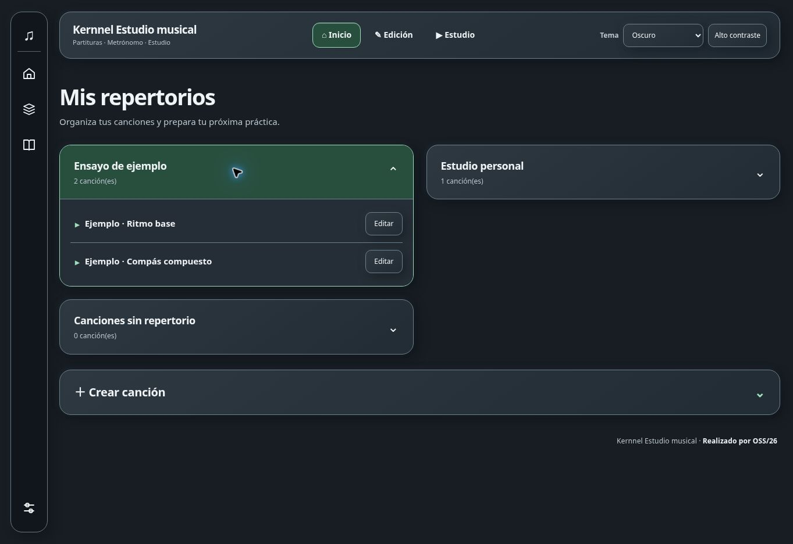

Biblioteca y repertorios
Consulta, filtrado y agrupación de canciones en repertorios.
Consultar función →Procedimientos para la organización de repertorios, definición de estructuras musicales por compases, ejecución del metrónomo y registro de sesiones de práctica.
Kernnel 2.0 se abre en Inicio con los repertorios contraídos. Despliegue uno y pulse Estudiar o Editar junto al tema. También puede usar Estudio o Edición en la barra superior para elegir un tema de la biblioteca completa. En Estudio, las herramientas se ocultan inicialmente para dejar más espacio a la partitura.

kernnel-interfaz-oscura.jpg.Consulta, filtrado y agrupación de canciones en repertorios.
Consultar función →Definición de secciones, anotaciones y marcadores de dificultad.
Consultar función →Configuración de pulsación, métrica, intensidad y preparación.
Consultar función →Reproducción de intervalos, repetición y control de visualización.
Consultar función →Esta guía reúne los pasos para abrir, editar y estudiar un tema. Use el buscador para encontrar controles como Cancelar, Loop o Ir a compás.
Crea una única canción y permite asociarla a uno, varios o ningún repertorio desde el mismo formulario.
Agregar un repertorio al formulario todavía no lo guarda. Contraer el formulario no confirma la creación y conserva lo escrito durante la sesión; recargar la página descarta los borradores sin guardar.
Las métricas admitidas son 2/4, 3/4, 4/4, 6/8, 9/8 y 12/8. La cantidad de compases puede modificarse posteriormente.
En Inicio, las tarjetas permiten recorrer repertorios y abrir cada tema con Estudiar o Editar. Para buscar, filtrar u organizar canciones, abra Herramientas e instrucciones y despliegue Biblioteca y repertorios.
Una canción puede pertenecer a varios repertorios sin duplicarse. Sus cambios se reflejan en todos los que la contienen. Eliminar un repertorio conserva sus canciones.
El guardado automático continúa durante la edición. El punto de retorno pertenece a esa sesión y se renueva al volver a entrar o si la sincronización actualiza el tema. Salir vuelve al repertorio.
La partitura de Estudio es de solo lectura. Pase el cursor, enfoque con el teclado o toque una nota anotada o el botón Nota del compás para leer el comentario en una ventana emergente. Al pausar sobre una anotación también puede leerla. En pantallas táctiles, los comentarios aparecen automáticamente al llegar al compás o pulso correspondiente.
Pulse una nota con imagen para abrir una ventana ampliada con la imagen y el comentario, si lo hay. Puede abrir una imagen aunque la nota carezca de texto. Pulse fuera de la ventana o presione Esc para cerrarla.
Las notas de los compases ejecutados se atenúan a gris. La marca se conserva al detener y volver a reproducir durante la misma sesión de Estudio. Se reinicia al salir de Estudio o cambiar de tema.
La partitura representa la estructura y los pulsos. Si el tema necesita notación adicional, adjunte un fragmento de la partitura original como imagen. Los compases eliminados se pueden recuperar desde la papelera.
Los botones de compás anterior y siguiente están en Edición. En Estudio, use Ir a compás.
El tempo de práctica admite de 30 a 300 BPM. En 6/8, 9/8 y 12/8, el metrónomo pulsa por corchea y acentúa el primer pulso de cada compás.
En Ajustes → Práctica y sesiones puede configurar un intervalo, activar la repetición, usar la canción completa, ajustar el zoom y el desplazamiento automático, o saltar a un compás difícil marcado con estrella. Ponga un nombre a la práctica y pulse Guardar sesión para recuperar sus ajustes más adelante con Cargar.
En la aplicación, abra Herramientas e instrucciones → Práctica y sesiones → Tema y accesibilidad. En Estudio también puede entrar desde Ajustes.
En este manual, los controles Tema y Alto contraste aparecen en el encabezado. El manual conserva su propia preferencia en el navegador.
Permite generar un respaldo JSON completo, importar archivos compatibles, exportar elementos individuales y recuperar información eliminada.
El almacenamiento del navegador no sustituye un respaldo externo. Conserve una copia JSON independiente del dispositivo.
Las canciones y los repertorios se cargan al ingresar. Con conexión, la aplicación guarda automáticamente los elementos modificados en la biblioteca asociada a su cuenta de Google.
Sin conexión, los cambios quedan pendientes en el equipo y se envían al reconectar. El primer ingreso en un dispositivo requiere conexión.
Si dos equipos modifican el mismo elemento, revise las versiones y sus fechas. Las copias de canciones con la etiqueta Duplicada por conflicto se encuentran en Canciones sin repertorio.
Para recuperar una edición anterior, abra Historial de versiones y pulse Recuperar como copia en la versión que quiera conservar. El historial requiere conexión y conserva hasta 20 versiones por canción o repertorio. La copia se agrega a la biblioteca junto con los elementos existentes.
No se encontraron módulos asociados a los términos ingresados.
Acceda a la aplicación mediante un navegador compatible. Utilice su opción de instalación de aplicaciones web cuando esté disponible.
Abra Kernnel en Safari, acceda a Compartir y utilice la opción de añadir a la pantalla de inicio.
Tras una instalación correcta y la descarga inicial de los recursos, las funciones locales pueden seguir operando sin red. El primer ingreso con Google requiere Internet. Después de validar la cuenta en el dispositivo, puede usar la biblioteca local sin conexión. Los cambios pendientes se sincronizan al volver a conectarse.
La biblioteca local pertenece al almacenamiento del navegador y del origen web correspondiente. No elimine datos de navegación sin disponer de un respaldo verificable.
Inicio muestra las tarjetas de repertorios contraídas. Pulse una para ver sus canciones; revise también Canciones sin repertorio. Esta vista no elimina su biblioteca.
No. Todos los repertorios apuntan a la misma canción. Sus cambios se reflejan en cada repertorio que la contiene.
Los módulos tienen apertura exclusiva para mantener las herramientas ordenadas. Puede volver a abrir el módulo anterior cuando lo necesite.
Abra Kernnel con conexión a Internet para que descargue los recursos actualizados. Si todavía aparece la interfaz anterior, cierre y vuelva a abrir la aplicación. No borre los datos del navegador para actualizarla.
El metrónomo y las herramientas locales funcionan sin Internet cuando los recursos y la biblioteca ya están en el dispositivo. El primer ingreso y la sincronización con Google requieren conexión.
Sí. Las canciones y repertorios se sincronizan automáticamente con la misma cuenta de Google autorizada. El panel Sincronización Google muestra el estado y permite solicitar una comprobación inmediata.
No. Es una representación de pulsos, estructura y anotaciones. No sustituye un editor de notación musical completo.
Cancelar deshace los cambios desde el último Guardar manual o desde que abrió el tema en Edición. Salir regresa al repertorio y conserva el trabajo guardado automáticamente.